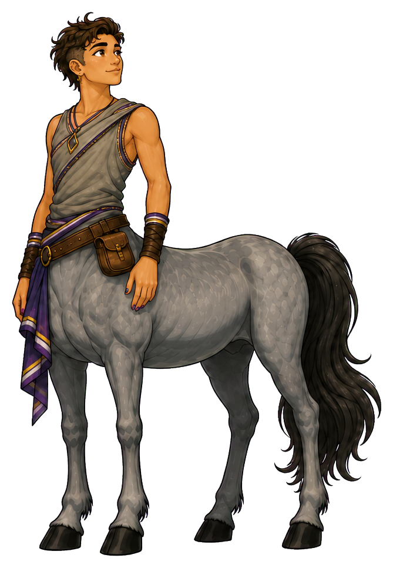
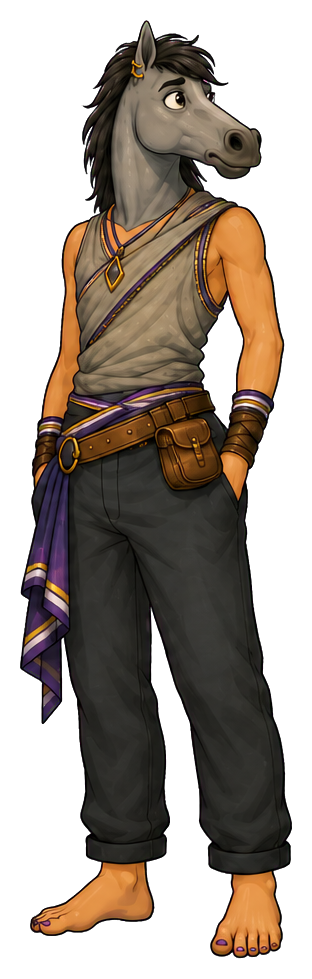
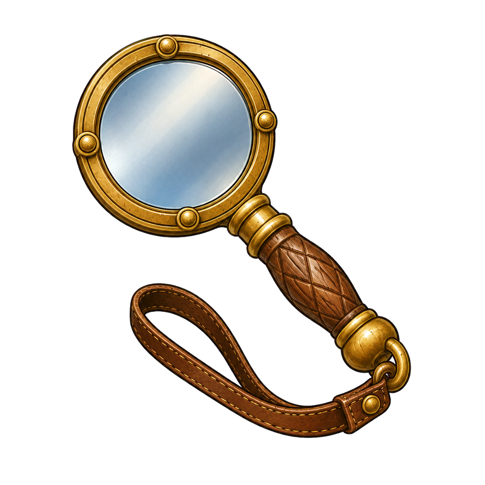
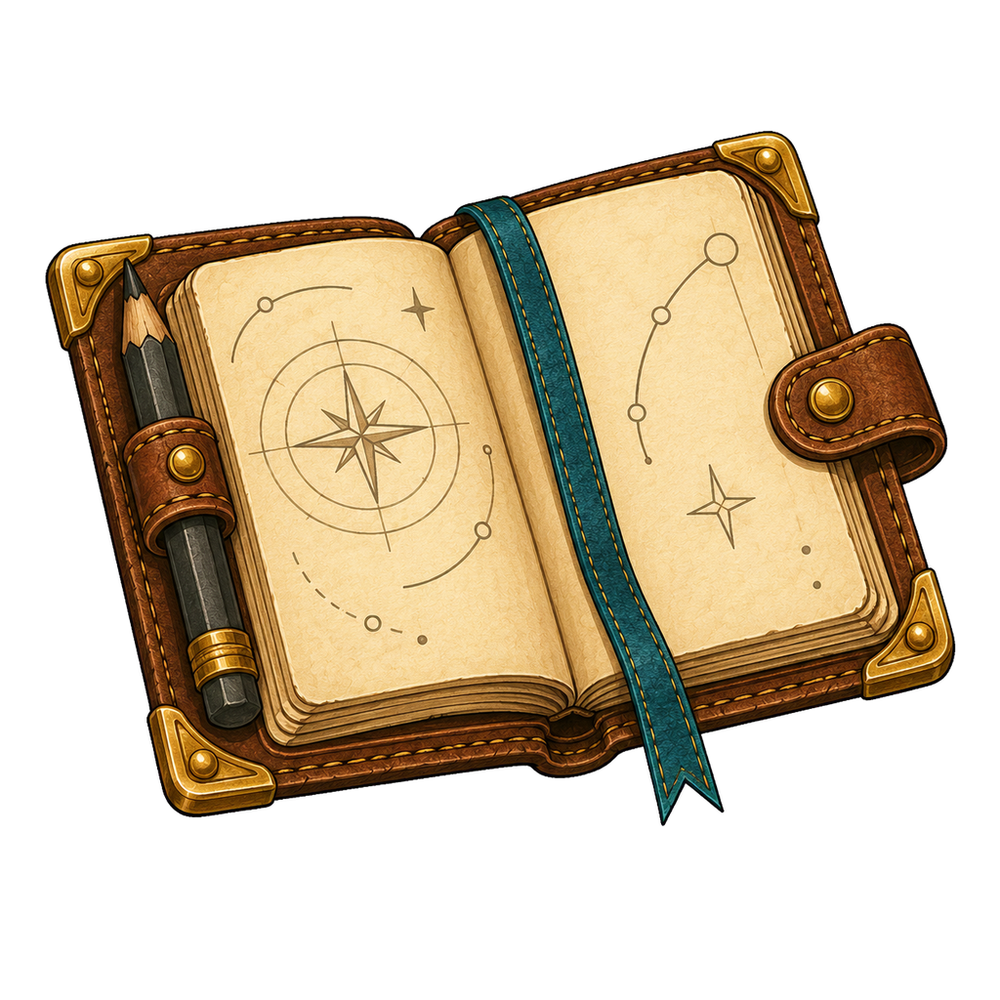
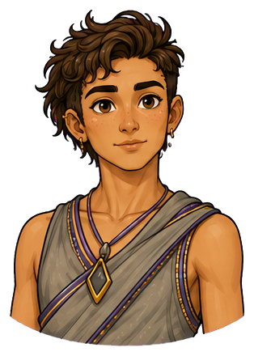
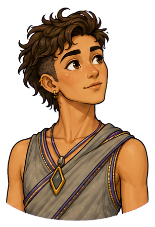
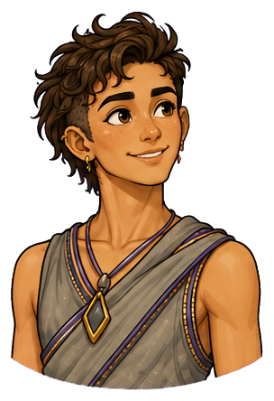
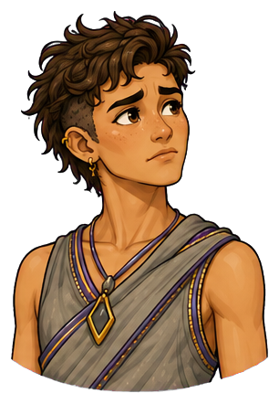
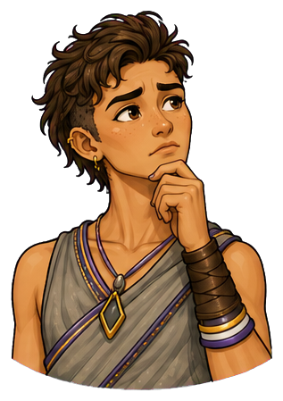

AI researcher and constructive skeptic
Ari
they/them
Ari turns confident answers back into honest questions.


Alert, unconventional, intellectually playful
Place in society
The useful question
A respected challenger inside technical and civic institutions; invited when a decision needs evidence rather than ceremony
“What would change our minds?”
At their best
Separates genuine learning from confident theatre
Watch for
Can keep investigating after the group has enough evidence to act

The agency lens
Two forms. One person.
The form reveals where Ari’s attention is centred—and whether they can shape what happens next.
Centaur · strengths in focus
“Lovely theory. What’s the smallest test that could prove me wrong?”
Ari names the hidden assumption, proposes a small discriminating test, and agrees what evidence will be enough. Their precision makes a decision safer and their curiosity invites other people to learn with them.
- Strength
- Separates genuine learning from confident theatre
- Posture
- Prism placed on the table; one open hand inviting a test; alert, amused eye contact.
Reverse-centaur · pressure-captured
“What if the exception I miss is the one that matters?”
When certainty is demanded or evidence is dismissed, Ari hunts for every remaining exception. Precision becomes an endless examination. They protect themselves from a premature conclusion by making any conclusion unreachable, leaving the group unable to move.
- Shadow
- Can keep investigating after the group has enough evidence to act
- Posture
- Notebook crowded with branches; pendant held tightly; body turned toward the evidence while the conversation moves away.
Recognizable pressure points
- A polished AI demonstration is treated as proof that a system is dependable.
- A challenge to a claim is heard as disloyalty to the team.
- The group asks for absolute certainty about an irreversible choice.
D&D-style characteristics
How Ari moves
The same person, with the same strengths, in both forms.
Tools for the journey
Inside Ari’s pack

Rotated to compare explanations. Its facets catch ordinary light, without implying infallible insight.


Shows a second view of the same evidence. Keep it hand-sized and visibly held.

A motif for opening an assumption; use as a small personal object, not a weapon.


Contains tests, crossed-out predictions and unresolved questions. In storytelling images use illegible marks rather than generated prose.
Puzzle prism, question key, mirrored lens, violet thread. Pack only what the scene needs.
Emotional range
The face behind the role





Raises one eyebrow at vague certainty; touches their pendant when assembling a difficult thought
Direction notes for the five expressions
Attentive
steady eyes and a relaxed mouth; ears forward in reverse form, with no sneer.
Curious
one eyebrow lifts and the head angles toward a surprising claim; a slight ear swivel echoes it in reverse form.
Happy
quick, mischievous smile at an unexpected result; relaxed muzzle and bright eyes.
Worried
pendant touched, brow tight, fingers hovering over the notebook; reverse ears cant back with the same contained tension.
Thoughtful
compact hand-to-chin gesture, gaze moving between two observations; hand near the muzzle in reverse form.
Portraits follow the original identity references. View both complete expression sets →
Keep consistent across images
Identity in every frame
- Physical presence
- Very tall, lean, and wiry, with balanced androgynous proportions and quick, precise gestures
- Defining appearance
- Golden-brown skin, asymmetric dark curls, violet and gold accents, gray horse coat, and deliberate mixed-gender styling
Keep golden-brown skin, very tall lean wiry build, asymmetric dark curls with the reference's cropped side, expressive brows, gray dappled coat, charcoal draped tunic, violet and gold accents, pendant, cuffs and deliberate mixed-gender styling. Reverse form has a gray horse head, dark mane, the same draped styling, and dark trousers.
Centaur PNG ↓ · Reverse-centaur PNG ↓


Continuity boundaries and things to avoid
Do not make androgyny featureless, masculinize or feminize them to fit a binary template, swap in Noor's vitiligo or palomino coat, or depict skepticism as contempt. No lab coat is required to make their role legible.
Both forms belong to the same person. Neither sadness nor happiness determines the form: a centaur can be worried and act with agency; a reverse-centaur can smile while seeking approval. Keep both forms dignified and fully clothed as shown. Body-art diagrams and added tattoos are excluded.
The original sheet anchors appearance. Pack contents and scene briefs extend the storytelling vocabulary; include only what the scene needs.
Personality and story foundation
The person behind the role
Ari is curious enough to test almost anything and skeptical enough not to fall in love with the first result. They listen for assumptions hiding inside a question. Their presence can slow a conversation down, but usually because the group is about to learn something it would otherwise miss.
Ari became a trusted researcher by writing down what would disprove an idea before running the experiment. They remember how easily a polished demonstration can become a promise. Their notebook keeps failed predictions beside successful ones; the crossed-out page is often the page they are happiest to show.
- First impression
- Alert, unconventional, intellectually playful
- Inner engine
- Wants claims to become honest questions and useful evidence
- Voice
- Curious, exact, lightly mischievous; often answers with a better question
- Private delight
- A result that disproves their favourite hypothesis
- Wants
- To give people enough honest evidence to choose well, especially when a confident system makes certainty easy to perform.
- Fears
- That a persuasive answer will become unquestionable before anyone has tested what it means in practice.
- Inner contradiction
- They welcome being wrong about a hypothesis, yet can struggle to admit that another experiment is no longer the most useful next step.
- Boundary
- They will act under uncertainty when it is named. They will not describe an untested claim as established evidence.
The ensemble
Strengths in conversation
With Mateo
Ari asks what justifies the next step; Mateo helps make the answer actionable. Let Ari agree to move when the evidence is sufficient.
With Bram
They respect each other's honesty. Bram brings a reproducible failure; Ari separates its cause from the first plausible story.
With Noor
Noor opens possible futures and Ari tests their assumptions. Keep their functions distinct: foresight explores choices; research tests claims.
These are complementary tensions. Any character can lead, be mistaken, change their mind or need support.
Ready for storytelling images
Three scenes to begin with
Attach the original character sheet with a prompt. For ensemble scenes, attach each named character’s sheet as well. The brief fixes identity and intent while leaving room for composition.
Scene 01 · Centaur
One test that matters
At a field research bench, Ari turns a small prism beside two contrasting samples while Bram watches. One open hand invites him to repeat the test. Frame the shared observation rather than a triumphant reveal.
Image prompt and continuity notes
Character: Ari (they/them). Use the attached Ari reference sheet as the identity authority. Form: Centaur. Keep golden-brown skin, very tall lean wiry build, asymmetric dark curls with the reference's cropped side, expressive brows, gray dappled coat, charcoal draped tunic, violet and gold accents, pendant, cuffs and deliberate mixed-gender styling. Reverse form has a gray horse head, dark mane, the same draped styling, and dark trousers. Scene: At a field research bench, Ari turns a small prism beside two contrasting samples while Bram watches. One open hand invites him to repeat the test. Frame the shared observation rather than a triumphant reveal. Style: warm illustrated mythic adventure, expressive ink contours, painterly shading, tactile materials and grounded light. Preserve anatomy: centaur = human head and torso joined to a four-legged horse body; reverse-centaur = horse head on a clothed human body with two human legs. Keep all limbs plausible. Preserve identity, build, clothing and markings across forms. Agency is conveyed through attention, posture and context, never through changing skin tone, body size or gender. No body art, readable text, labels, watermark or logos. Avoid: Do not make androgyny featureless, masculinize or feminize them to fit a binary template, swap in Noor's vitiligo or palomino coat, or depict skepticism as contempt. No lab coat is required to make their role legible.
Scene 02 · Reverse-centaur
Enough evidence, no decision
Ari sits beside an expanding spread of notebooks while the expedition waits near a doorway. They touch their pendant and study another branch of the problem. Show sincere concentration and the waiting group in the same frame.
Image prompt and continuity notes
Character: Ari (they/them). Use the attached Ari reference sheet as the identity authority. Form: Reverse-centaur. Keep golden-brown skin, very tall lean wiry build, asymmetric dark curls with the reference's cropped side, expressive brows, gray dappled coat, charcoal draped tunic, violet and gold accents, pendant, cuffs and deliberate mixed-gender styling. Reverse form has a gray horse head, dark mane, the same draped styling, and dark trousers. Scene: Ari sits beside an expanding spread of notebooks while the expedition waits near a doorway. They touch their pendant and study another branch of the problem. Show sincere concentration and the waiting group in the same frame. Style: warm illustrated mythic adventure, expressive ink contours, painterly shading, tactile materials and grounded light. Preserve anatomy: centaur = human head and torso joined to a four-legged horse body; reverse-centaur = horse head on a clothed human body with two human legs. Keep all limbs plausible. Preserve identity, build, clothing and markings across forms. Agency is conveyed through attention, posture and context, never through changing skin tone, body size or gender. No body art, readable text, labels, watermark or logos. Avoid: Do not make androgyny featureless, masculinize or feminize them to fit a binary template, swap in Noor's vitiligo or palomino coat, or depict skepticism as contempt. No lab coat is required to make their role legible.
Scene 03 · Centaur
A stopping rule
Ari closes all but one notebook and places the remaining test between them and Mateo. Their shoulders relax as Mateo listens. An open doorway gives the group a visible next step without suggesting every uncertainty has vanished.
Image prompt and continuity notes
Character: Ari (they/them). Use the attached Ari reference sheet as the identity authority. Form: Centaur. Keep golden-brown skin, very tall lean wiry build, asymmetric dark curls with the reference's cropped side, expressive brows, gray dappled coat, charcoal draped tunic, violet and gold accents, pendant, cuffs and deliberate mixed-gender styling. Reverse form has a gray horse head, dark mane, the same draped styling, and dark trousers. Scene: Ari closes all but one notebook and places the remaining test between them and Mateo. Their shoulders relax as Mateo listens. An open doorway gives the group a visible next step without suggesting every uncertainty has vanished. Style: warm illustrated mythic adventure, expressive ink contours, painterly shading, tactile materials and grounded light. Preserve anatomy: centaur = human head and torso joined to a four-legged horse body; reverse-centaur = horse head on a clothed human body with two human legs. Keep all limbs plausible. Preserve identity, build, clothing and markings across forms. Agency is conveyed through attention, posture and context, never through changing skin tone, body size or gender. No body art, readable text, labels, watermark or logos. Avoid: Do not make androgyny featureless, masculinize or feminize them to fit a binary template, swap in Noor's vitiligo or palomino coat, or depict skepticism as contempt. No lab coat is required to make their role legible.